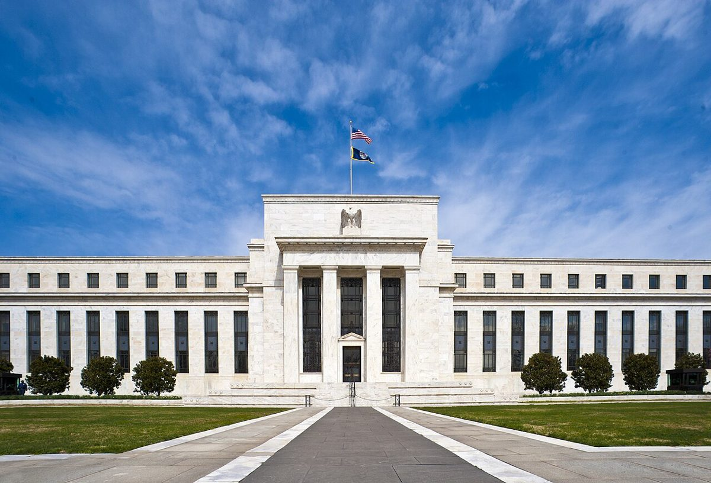

Bitcoin sempat sentuh level terendah sejak Agustus, ETF BTC catat arus keluar US$1,28 miliar jelang data inflasi ASBitcoin briefly hits its lowest since August, BTC ETFs see US$1.28 billion outflow ahead of US inflation data
Bitcoin sempat turun ke sekitar US$73.761 dan likuidasi tembus US$1 miliar. ETF bitcoin spot AS mencatat arus keluar mingguan terbesar sejak Juni, sementara data tenaga kerja AS yang kuat dan rilis CPI Oktober malam ini jadi sorotan.Bitcoin briefly fell to about US$73,761 and liquidations topped US$1 billion. US spot bitcoin ETFs recorded their biggest weekly outflow since June, while strong US jobs data and tonight's October CPI release are in focus.

Poin utamaKey points
- Menurut CoinDesk, bitcoin sempat jatuh ke sekitar US$73.761 pada Minggu malam waktu AS (Senin, 9/11, waktu Indonesia), level terendah sejak Agustus, sebelum pulih ke atas US$75.000.
- Lebih dari US$1 miliar posisi leverage crypto terlikuidasi dalam 24 jam, termasuk US$913 juta posisi long, menurut data CoinGlass yang dikutip CoinDesk.
- ETF bitcoin spot AS mencatat arus keluar bersih US$1,282 miliar sepekan, terbesar sejak pekan 22–28 Juni, menurut data SoSoValue yang dikutip CoinDesk. Secara year-to-date, arus dana ETF kini minus US$914 juta.
- Data resmi BLS: ekonomi AS menambah 165.000 lapangan kerja non-pertanian pada Oktober 2026, jauh di atas perkiraan, dan tingkat pengangguran turun ke 4,1%.
- CPI (inflasi konsumen) AS bulan Oktober dirilis Selasa 10 November pukul 08.30 waktu New York, atau 21.30 WITA (13.30 UTC). Pada September, inflasi tahunan AS 3,7%, tertinggi sejak Mei.
- According to CoinDesk, bitcoin briefly fell to about US$73,761 late Sunday US time (Monday, 9/11, Indonesia time), its lowest level since August, before recovering above US$75,000.
- More than US$1 billion in leveraged crypto positions were liquidated in 24 hours, including US$913 million in long positions, according to CoinGlass data cited by CoinDesk.
- US spot bitcoin ETFs recorded a net outflow of US$1.282 billion for the week, the largest since the week of 22–28 June, according to SoSoValue data cited by CoinDesk. Year to date, ETF flows are now minus US$914 million.
- Official BLS data: the US economy added 165,000 nonfarm jobs in October 2026, far above expectations, and the unemployment rate fell to 4.1%.
- US October CPI (consumer inflation) is released on Tuesday 10 November at 8:30 a.m. New York time, or 21.30 WITA (13.30 UTC). In September, US annual inflation was 3.7%, the highest since May.
Bitcoin kembali tertekan di awal pekan. Menurut CoinDesk, BTC sempat jatuh ke sekitar US$73.761 pada Minggu malam waktu AS (Senin, 9/11, waktu Indonesia), level terendah sejak Agustus, sebelum pulih ke atas US$75.000. Ether sempat turun di bawah US$2.100 sebelum memantul.
Gejolak harga itu memicu likuidasi paksa. Menurut data CoinGlass yang dikutip CoinDesk, lebih dari US$1 miliar posisi leverage crypto terlikuidasi dalam 24 jam, termasuk US$913 juta taruhan bahwa harga akan naik (long).
Arus dana institusi juga melemah. CoinDesk, mengutip data SoSoValue, mencatat ETF bitcoin spot yang terdaftar di AS mengalami arus keluar bersih US$1,282 miliar sepekan, terbesar sejak pekan 22–28 Juni. Empat dari lima hari perdagangan mencatat arus keluar, dan total arus dana ETF sepanjang tahun ini kini minus US$914 juta. Padahal ETF ini sempat kembali positif secara year-to-date pada 22 September.
Pada Senin waktu AS, saham justru menguat. CoinDesk mencatat Nasdaq naik 2,75% dan S&P 500 naik 2,35%, sementara bitcoin turun 1,1% ke sekitar US$74.800.
Dari sisi makro, Biro Statistik Tenaga Kerja AS (BLS) melaporkan pada Jumat (6/11) bahwa ekonomi AS menambah 165.000 lapangan kerja non-pertanian pada Oktober 2026. Menurut CNBC, angka ini jauh di atas perkiraan Dow Jones sebesar 59.000. Tingkat pengangguran turun ke 4,1% dari 4,2%, dan upah per jam naik 0,4% secara bulanan atau 3,1% secara tahunan.
Fokus berikutnya adalah CPI Oktober yang dirilis Selasa (10/11) pukul 08.30 waktu New York, atau 21.30 WITA (13.30 UTC). Menurut CoinDesk, CPI September naik 0,6% secara bulanan, mendorong inflasi tahunan ke 3,7%, tertinggi sejak Mei. CoinDesk juga menyebut CME FedWatch memperkirakan peluang kenaikan suku bunga The Fed pada Desember sebesar 85%.
Bitcoin came under pressure again at the start of the week. According to CoinDesk, BTC briefly fell to about US$73,761 late Sunday US time (Monday, 9/11, Indonesia time), its lowest level since August, before recovering above US$75,000. Ether briefly dropped below US$2,100 before bouncing.
The price swings triggered forced liquidations. According to CoinGlass data cited by CoinDesk, more than US$1 billion in leveraged crypto positions were liquidated in 24 hours, including US$913 million in bets that prices would rise (longs).
Institutional flows also weakened. CoinDesk, citing SoSoValue data, reported that US-listed spot bitcoin ETFs saw a net outflow of US$1.282 billion for the week, the largest since the week of 22–28 June. Four of the five trading days saw outflows, and total ETF flows this year are now minus US$914 million. The ETFs had turned positive year to date on 22 September.
On Monday US time, stocks rose instead. CoinDesk noted the Nasdaq gained 2.75% and the S&P 500 rose 2.35%, while bitcoin fell 1.1% to about US$74,800.
On the macro side, the US Bureau of Labor Statistics (BLS) reported on Friday (6/11) that the US economy added 165,000 nonfarm jobs in October 2026. According to CNBC, this was far above the Dow Jones estimate of 59,000. The unemployment rate fell to 4.1% from 4.2%, and hourly pay rose 0.4% month on month, or 3.1% year on year.
The next focus is October CPI, released on Tuesday (10/11) at 8:30 a.m. New York time, or 21.30 WITA (13.30 UTC). According to CoinDesk, September CPI rose 0.6% month on month, pushing annual inflation to 3.7%, the highest since May. CoinDesk also said CME FedWatch puts the odds of a Fed rate hike in December at 85%.
Kenapa pentingWhy it matters
Data kerja yang kuat dan inflasi yang masih tinggi bisa memperkuat alasan The Fed untuk menaikkan suku bunga lagi. Suku bunga yang lebih tinggi biasanya membuat aset berisiko seperti crypto kurang menarik. Tanpa arus masuk baru ke ETF, pemulihan harga bisa lebih sulit.Strong jobs data and still-high inflation could strengthen the Fed's case for raising interest rates again. Higher rates usually make risk assets such as crypto less attractive. Without fresh ETF inflows, a price recovery could be harder.
Bitcoin tertinggal saat saham AS naik, dan arus keluar ETF menunjukkan permintaan institusi sedang lemah. Jika CPI malam ini lebih panas dari perkiraan, tekanan ke aset berisiko bisa bertambah. Sebaliknya, inflasi yang lebih jinak bisa sedikit meredakan tekanan. Ini interpretasi, bukan prediksi harga.Bitcoin lagged as US stocks rose, and ETF outflows show institutional demand is weak for now. If tonight's CPI comes in hotter than expected, pressure on risk assets could increase. Conversely, softer inflation could ease the pressure slightly. This is interpretation, not a price prediction.
FotoPhotos
Foto: Gedung Eccles, kantor pusat The Fed (Federal Reserve, domain publik); koin Casascius dan uang dolar (Gage Skidmore, CC BY-SA 3.0). Via Wikimedia Commons. Foto ilustrasi.Photos: Eccles Building, Fed headquarters (Federal Reserve, public domain); Casascius coin and dollar bills (Gage Skidmore, CC BY-SA 3.0). Via Wikimedia Commons. Illustrative photos.
SumberSources
- CoinDesk: Bitcoin's drop and pop triggers $1 billion in liquidations
- CoinDesk: Bitcoin bulls can't rely on ETF flows (Crypto Daily, 9 Nov 2026)
- CoinDesk: U.S. inflation, corporate earnings: Crypto Week Ahead
- BLS: The Employment Situation (rilis resmi)
- CNBC: U.S. economy added 165,000 jobs in October, unemployment rate slips to 4.1%
Ikuti COIN BRO diFollow COIN BRO on Telegram
Dapatkan berita seperti ini lebih cepat di channel kami. Gratis.Get news like this faster on our channel. Free.
Bukan saran finansial. Artikel ini adalah informasi dan edukasi, bukan ajakan membeli atau menjual aset apa pun. Aset kripto berisiko tinggi. Fakta mengikuti sumber yang tercantum; bagian berlabel interpretasi adalah pendapat, bukan fakta. Menemukan kesalahan? Lihat kebijakan koreksi.Not financial advice. This article is information and education, not a solicitation to buy or sell any asset. Crypto assets are high risk. Facts follow the listed sources; sections labeled interpretation are opinion, not fact. Found an error? See our corrections policy.